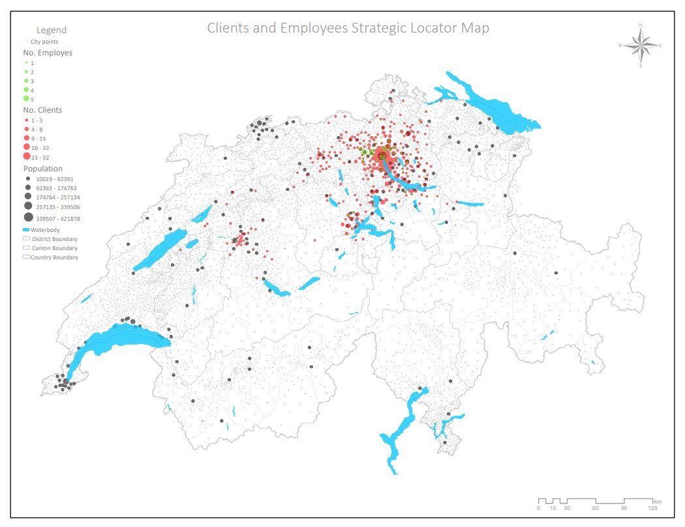

Strategy maps for a Swiss cleaning company: client and employee clusters by postal code (clients red, employees blue, circle size by count), and a later postal-code map shaded by client count.

Postcode-based strategic locator maps used to optimise service areas.